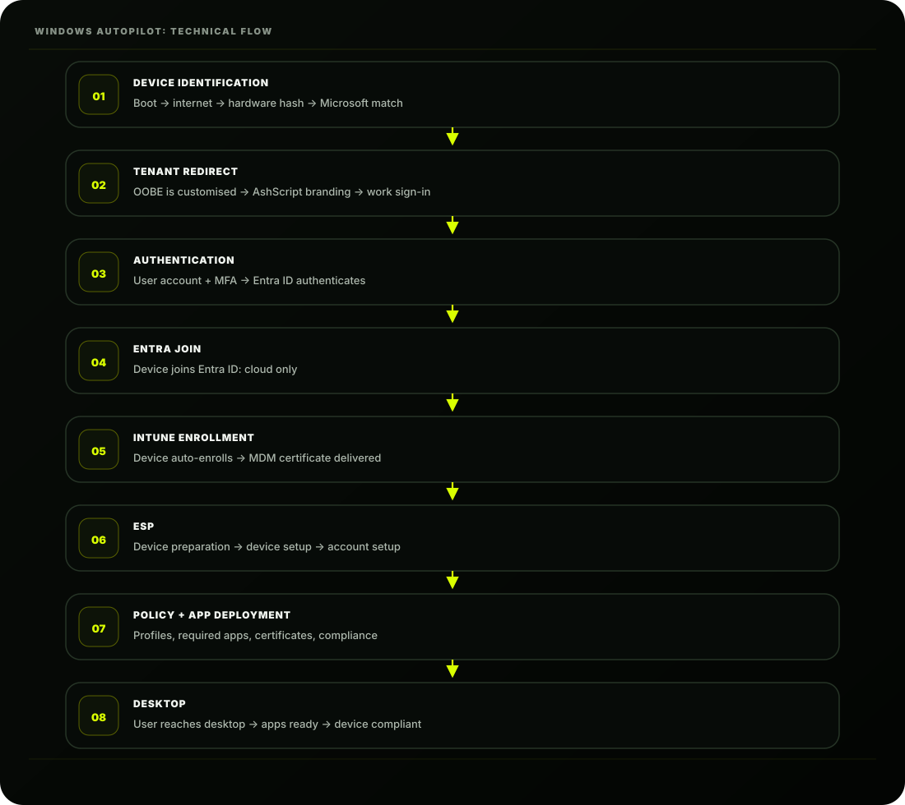
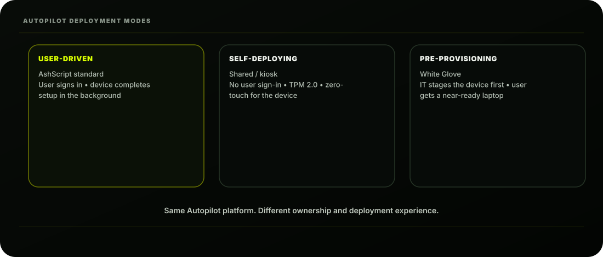

The Scene
It's Wednesday morning. The 50 new laptops are still in their boxes. Ashpak has spent the last two days
setting up Autopilot behind the scenes. His colleague Kabir walks in and picks up a laptop:
"So do we image these now? I'll get the USB drives."
Ashpak shakes his head.
"Put the USB drives away. We're never imaging again."
Kabir looks confused. Ashpak opens the first box, takes out the laptop, connects it to the office Wi-Fi
via a network cable, and turns it on. The Windows setup screen appears.
"Watch," says Ashpak.
The screen pauses. A blue screen appears:
Kabir watches as; without anyone touching a single setting; the laptop configures itself.
Applications install. Policies apply. The user's desktop appears, pre-configured and ready.
Twenty-three minutes. Start to finish.
"That," says Ashpak, "is Autopilot."
What is Windows Autopilot?
Windows Autopilot is a cloud-based zero-touch deployment service that transforms how Windows
devices are provisioned.
Welcome to AshScript
Your device is being set up by your organisation.
This may take a few minutes.
The traditional way:
The Autopilot way:
The philosophical shift: Instead of starting with a blank OS and adding corporate configuration
; Autopilot starts with the factory Windows installation and transforms it into a corporate
device through cloud-delivered policies. No reimaging. No USB drives. No imaging servers.

Autopilot technical flow
How Autopilot Works: The Full Technical Picture
Let's understand every step of what actually happens under the hood:
TRADITIONAL WINDOWS DEPLOYMENT
4
Image with corporate OS build
6
Install base applications
10
User calls helpdesk: "My app is missing"
Time: 2-4 hours per device
IT touches: Every single device
AUTOPILOT DEPLOYMENT
1
Register device hardware hash (done at purchase)
2
Ship device directly to user
3
User turns it on, connects to internet
4
Signs in with company email
5
Everything else is automatic
Time: 20-45 minutes (background, no IT needed)
IT touches: Zero devices physically
Factory Windows transformed by cloud-delivered policy.
The Hardware Hash: The Secret Ingredient
The entire Autopilot process depends on one thing: the hardware hash.
How to Get the Hardware Hash
Method 1; From the vendor (best approach): When purchasing devices, ask your vendor (Dell, HP,
Lenovo, Microsoft Surface, etc.) to register the hardware hashes directly into your Autopilot tenant.
Most major OEMs support this. Ashpak does this for all 50 new laptops at purchase.
Method 2; Extract from existing device: If you need to add an existing device to Autopilot:
WHAT IS A HARDWARE HASH?
A unique 4K string generated from:
• Device serial number
• Hardware manufacturer ID
• Hardware component fingerprint
It uniquely identifies a specific physical device.
No two devices have the same hash.
Example (truncated):
ZTDId,manufacturer,model,serialnumber,hardwareid
"","Microsoft","Surface Pro","SN12345","h5BG..."
powershell
# Run on the Windows device you want to register
# (Run as Administrator)
# Install required module
Install-Script -Name Get-WindowsAutoPilotInfo -Force
# Generate and upload hash directly to Intune
Get-WindowsAutoPilotInfo -Online
Method 3; During imaging (SCCM/MDT): Add a step to your imaging task sequence to capture and
upload the hash.
Uploading Hardware Hashes to Intune
If hashes come as a CSV file (from vendor or PowerShell):
CSV format:
After import, allow 15 minutes for devices to appear in the Autopilot device list. It's an async
process; don't panic if they don't appear instantly.
Creating an Autopilot Deployment Profile
The deployment profile tells Autopilot how to behave during setup. Ashpak creates one for
AshScript's standard laptop deployment:
# OR generate a CSV file to upload manually
Get-WindowsAutoPilotInfo -OutputFile C:\AutopilotHash.csv
→ Import
csv
Device Serial Number,Windows Product ID,Hardware Hash
SN-ASH-001,,h5BG3KMn...
SN-ASH-002,,7dKP9xRt...
SN-ASH-003,,mN2Qw8Yz...
Autopilot profile settings
|
Setting
|
AshScript value
|
|
Deployment mode
|
User-driven (User signs in with work account)
|
|
Join to Entra ID as
|
Entra joined (cloud-only, no domain join)
|
|
Microsoft Software Licence Terms
|
Hide (pre-accepted by IT)
|
|
Privacy settings
|
Hide (corporate devices; no user choice)
|
|
Hide change account options
|
Hide
|
|
User account type
|
Standard (NOT administrator; principle of least privilege)
|
|
Allow pre-provisioned deployment
|
Yes (enables White Glove)
|
|
Language (Region)
|
Operating system default
|
|
Automatically configure keyboard
|
Yes
|
|
Apply device name template
|
Yes
|
|
Device name template
|
ASH-%RAND:5%
|
Profile Configuration: Walk Through:
Basics tab:
Out-of-box experience (OOBE) settings:
Name: AshScript Standard Laptop Deployment
Description: Standard Autopilot profile for all
AshScript corporate Windows laptops
Device name template: ASH-%RAND:5% automatically generates names like ASH-K7M2P .
Other options:
%SERIAL%; uses device serial number
ASH-%SERIAL%; prefix + serial number
LAPTOP-%RAND:4%; custom prefix + 4 random chars
Assignments tab:
Ashpak creates a dynamic device group:
The Enrollment Status Page (ESP)
Assign to: INTUNE-DEV-AUTOPILOT-PENDING
(A group containing all registered
Autopilot devices waiting to deploy)
Group: INTUNE-DEV-AUTOPILOT-PENDING
Rule: device.enrollmentProfileName -eq
"AshScript Standard Laptop Deployment"
The Enrollment Status Page is the progress screen users see during Autopilot setup. It prevents users
from reaching the desktop until the device is fully configured.
Without ESP:
With ESP:
AshScript ESP settings
|
Setting
|
Value
|
|
Show app and profile config progress
|
Yes
|
|
Show error when installation takes longer than X minutes
|
Yes • 60 minutes
|
|
Show custom message when time limit error occurs
|
Yes • "Please contact IT: helpdesk@ashscript.com"
|
|
Allow users to collect logs
|
Yes (helps with troubleshooting)
|
|
Block device use until all required apps are installed
|
Yes
|
|
Critical required apps
|
Microsoft 365 Apps • Company VPN • Security Agent
|
Configuring the ESP:
AshScript ESP Settings:
User reaches desktop in 2 minutes
But apps haven't installed yet
User tries to open Teams; it's not there
User calls helpdesk → frustration
User sees progress screen:
Device preparation complete
Installing Microsoft 365 Apps... (47%)
Installing Company Security Tools...
Applying security policies...
User cannot reach desktop until complete.
Desktop appears: everything is ready.
Zero helpdesk calls for "my app is missing."
OR + Create (for custom ESP)
Autopilot Deployment Modes
There are three Autopilot deployment modes. Understanding which to use is important:

User-Driven, Self-Deploying and Pre-Provisioning.
Mode 1: User-Driven Recommended: (AshScript Standard)
Mode 2: Self-Deploying
WHO: End user sets up their own device
HOW: User turns on device, signs in with work account
WHEN: Device shipped directly to user
RESULT: Device configured to that specific user
USE CASE: Most employee laptops
WHO: No user interaction at all; device configures itself
HOW: Device boots, connects to internet, fully auto-configures
Mode 3: Pre-Provisioning (White Glove) Recommended:
The most powerful mode; two phases:
AshScript use: Ashpak uses White Glove for Executive laptops. Priya sets them up in the IT
room before delivery, so executives get a 3-minute setup experience.
Autopilot Reset: Reprovisioning a Device
When an employee leaves AshScript, their laptop needs to be wiped and re-provisioned for the next
user. Autopilot Reset handles this:
WHEN: No user account needed
RESULT: Shared device / kiosk ready
USE CASE: Shared laptops, meeting room devices, kiosks
NOTE: Requires TPM 2.0 hardware with device attestation
PHASE 1: IT Technician phase (done in IT or at vendor)
2
Presses Windows key 5 times at OOBE screen
3
Selects "Windows Autopilot provisioning"
4
Device downloads ALL policies and apps
(the slow part; 20-45 minutes)
5
IT verifies everything is installed correctly
6
IT re-seals device in box or packs for shipping
PHASE 2: User phase (takes ~2 minutes)
2
Signs in with work account
3
Device was already configured; just personalises
4
Desktop appears in under 3 minutes
RESULT: User gets a fully configured device
almost instantly
USE CASE: VIP users, executives, time-sensitive deployments
What Autopilot Reset does:
The next employee who turns on the laptop goes through the same Autopilot process; signs in
with their work account and gets a fully configured device in 20 minutes. No IT reimaging. No
USB drives. Ever.
Troubleshooting Autopilot
Real deployments hit issues. Here are the most common ones Ashpak encounters:
Issue 1: Device Not Recognised as Autopilot Device
Removes all user data and settings
Removes all installed applications
Keeps Windows OS intact (no reimaging needed)
Keeps device Entra-joined to AshScript tenant
Keeps device in Autopilot program
Re-runs OOBE for next user sign-in
× Does NOT remove the device from Intune/Autopilot
SYMPTOM: Standard Windows OOBE appears (no company branding)
CAUSE: Hardware hash not yet registered / still processing
DIAGNOSIS:
→ Is it listed? If not → hash wasn't uploaded
FIX:
• Wait 15 minutes after CSV import
• Re-upload the CSV
• Verify CSV format is correct
• Check vendor uploaded the hash correctly
Issue 2: Enrollment Status Page Stuck / Times Out
Issue 3: Wrong User Gets the Device
Issue 4: "Something went wrong" Error During OOBE
SYMPTOM: ESP progress bar stalls; times out after 60 min
CAUSE: An app failed to install / policy error
DIAGNOSIS:
1
Click "View Diagnostics" on the ESP screen
2
Look for red failed items
3
OR after timeout → check:
→ Look for red error profiles
COMMON CAUSES:
× App package corrupted
× App marked Required but not actually available
× Certificate deployment failing
× Network connectivity issue during setup
FIX:
• Fix the failing app/profile
• Or remove it from ESP blocking apps list temporarily
SYMPTOM: Device Autopilot profile doesn't match the user
OR wrong apps deploy
CAUSE: Device assigned to wrong Autopilot group
OR group-based app assignment not updated
FIX:
• Check device's Autopilot profile assignment
• Verify the user is in correct Entra groups
• Re-run Autopilot Reset and start fresh
The Full Autopilot Setup Checklist
Here is the complete checklist Ashpak follows before the first Autopilot deployment:
SYMPTOM: OOBE shows error code (e.g. 0x80180014)
COMMON ERROR CODES:
0x80180014 → Device not licensed / not registered
0x80070774 → MDM terms not configured
0x800705B4 → Timeout during enrollment
0x801c03ea → TPM attestation failed (Self-Deploying mode)
DIAGNOSIS:
Check MDM diagnostic log on device:
Press SHIFT+F10 at OOBE → Opens CMD
→ mdmdiagnosticstool.exe -area Autopilot -zip C:\temp\log.zip
→ Review the ZIP for detailed error info
PRE-DEPLOYMENT CHECKLIST
INTUNE CONFIGURATION
MDM Authority set to Intune
Autopilot device registration complete
Deployment Profile created and assigned
Enrollment Status Page configured
Required apps marked as Required (not Available)
Configuration profiles ready and assigned
Compliance policy assigned
ENTRA ID CONFIGURATION
Entra Join enabled (not Hybrid Join for new devices)
MDM user scope = All (or target group)
User has M365 E3 licence assigned
User has MFA registered
NETWORK REQUIREMENTS
Device can reach internet (HTTPS port 443)
Microsoft endpoints not blocked by firewall:
• *.manage.microsoft.com
• *.microsoftonline.com
• *.windows.net
• *.windowsupdate.com
DHCP working (device gets IP address)
DEVICE REQUIREMENTS
Windows 10 1809 or later (Windows 11 recommended)
AshScript's Current State After Lesson 3.2
|
State
|
Status
|
|
Autopilot configured for 50 new Windows laptops
|
✓ Configured
|
|
Hardware hashes uploaded by vendor
|
✓ Uploaded
|
|
Deployment profile created (User-Driven + ESP)
|
✓ Created
|
|
White Glove configured for Executive laptops
|
✓ Configured
|
|
Autopilot Reset ready for device refresh
|
✓ Ready
|
|
First test device deployed successfully
|
✓ Success
|
|
Existing 750 laptops
|
Co-management (Lesson 3.3)
|
|
macOS enrollment
|
ADE (Lesson 3.4)
|
|
Android enrollment
|
Lesson 3.5
|
|
BYOD enrollment
|
Lesson 3.6
|
Key Concepts to Lock In
Concept Remember This
Hardware hash Unique device fingerprint; required for Autopilot
Hash source Vendor at purchase (best) or PowerShell script
Deployment profile Defines OOBE behaviour and device name
User-Driven mode Standard; user signs in with work account
TPM 2.0 present (required for Self-Deploy mode)
UEFI boot mode (not legacy BIOS)
Hardware hash uploaded and visible in portal
TEST BEFORE PRODUCTION
Tested with pilot device + pilot user
Verified all apps install correctly
Verified all policies apply correctly
ESP completes within acceptable time
Device shows as compliant after enrollment
Concept Remember This
Self-Deploying mode No user; for shared/kiosk devices
White Glove Two-phase; IT pre-provisions, user just signs in
Enrollment Status Page Blocks desktop until apps/policies complete
Autopilot Reset Wipes and re-provisions without reimaging
Device name template ASH-%RAND:5% or %SERIAL% formats
User account type Always Standard; never Administrator
ESP blocking apps Only list critical apps; don't block on everything
|
Concept
|
Remember This
|
|
Hardware hash
|
Unique device fingerprint; required for Autopilot
|
|
Hash source
|
Vendor or extracted from an existing device
|
|
Deployment profile
|
Defines OOBE and deployment behaviour
|
|
User-Driven mode
|
User signs in; standard laptop
|
|
Self-Deploying mode
|
No user; shared/kiosk devices
|
|
White Glove
|
Two-phase; IT pre-provisions, user just signs in
|
|
Enrollment Status Page
|
Blocks desktop until required configuration is complete
|